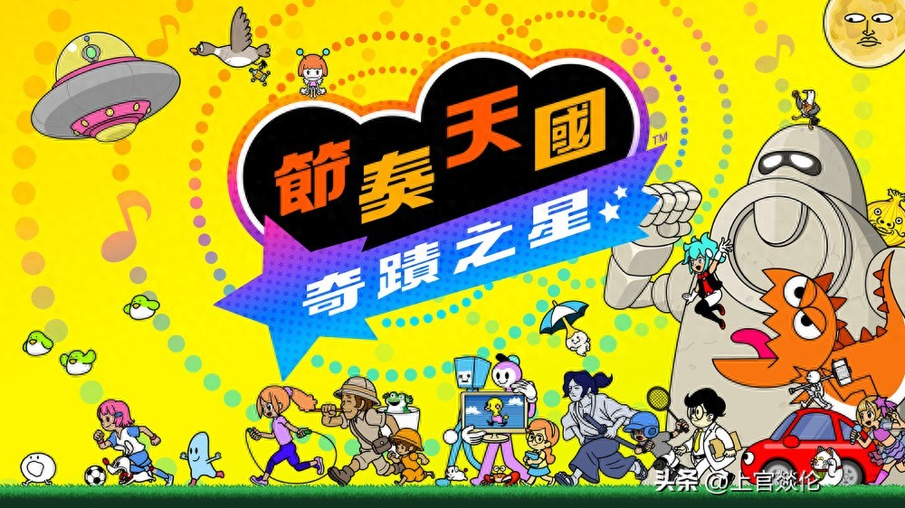

7 月 Switch 新作大爆发！双平台同发《节奏天国》等大作值得买吗？新硬件画质实测解析
进入 7 月，Switch 阵营迎来了一波强劲的新作攻势。在任天堂自研的两大重磅独占之外，本月还有多款值得用“放大镜”细品的作品待发售或更新。为了帮助玩家快速把握重点，本文整理了涵盖初代与最新主机阵容的购机指南：老机型如何优化运行？ 新硬件带来的画质提升具体体现在哪些游戏里？ 以下是针对核心大作的深度解析与建议名单，数据均源自官方公告及实测反馈，拒绝空话，只为你的钱包负责。

### 节奏大师归来：《节奏天国：奇迹之星》值得等待
备受瞩目的正统续作《节奏天国：奇迹之星》终于定档。根据官方日程表显示，游戏将于 7 月 2 日 同步登陆 Switch Lite、Switch OLED 及标准版（旧款）机型，同时支持跨平台联机游玩。
作为历经十余年打磨的系列回归，本作完美保留了标志性的魔性音乐点击感与脑回路清奇的关卡设计。新版本核心亮点在于多人同乐机制： 单人通关后的乐趣延伸至社交层面，玩家可直接邀请好友加入挑战。对于拥有旧款 Switch 的用户而言，新游戏不仅大幅提升了帧率稳定性以消除卡顿，更关键的是原生内置中文选项及适配优化。官方已开放试玩版下载通道（需在 NS-eShop 搜索名称获取），建议想尝鲜的朋友先体验一下新作在老机器上的表现，若对画质提升满意再决定是否入手新机。

### 多元化阵容解析：情怀、建设与策略并重
除了音游领域的惊喜，本月其他作品也极具针对性地覆盖了不同玩家群体：
本作巧妙串联过去与未来的时间线，一口气收录了四百余只经典及新创形态的数码兽。适合想要重温童年回忆且喜欢收集控属性的老粉，剧情演出诚意满满。

扮演一位吸血鬼领主经营魔法农场，玩法新颖独特。如果你厌倦了常规 RPG，想体验轻松惬意的“养老”模式，这款作品能提供极高的性价比娱乐时长。
此外，《悠然生活之庭》也将登陆本月榜单，继续延续该系列备受好评的低压力田园生活体验。
### 性能升级实测：新主机 vs 老机器运行对比
针对玩家关心的硬件适配问题，本作特别解析了以下两款 ARPG/动作游戏的运行情况：
### 结语与互动
从音游的精准打击到 RPG 的深度沉浸，再到种田模拟与生活建设，《7 月 Switch 必买榜单》涵盖了动作、射击等多种类型。无论你是追求单机剧情体验的玩家，还是热衷组队联机的社交型用户，这份清单都能提供有价值的参考建议。
关于试玩版的获取： 所有提及作品的试玩版均可直接在 Nintendo eShop（Nintendo Switch eShop）商店中搜索对应游戏名称免费下载。
你更期待哪款大作的首发？或者你的老主机运行新游戏有什么体验瓶颈？欢迎在评论区告诉我，我们一起讨论！
关于我们
📱 公众号名称：三天笔记
✍️ 作者：曾三天
扫码关注公众号，获取每日最新资讯

商务合作与版权
商务合作 / 内容投稿 / 品牌推广
请关注公众号「三天笔记」后台留言联系
版权声明：本文由作者整理，转载需注明出处。